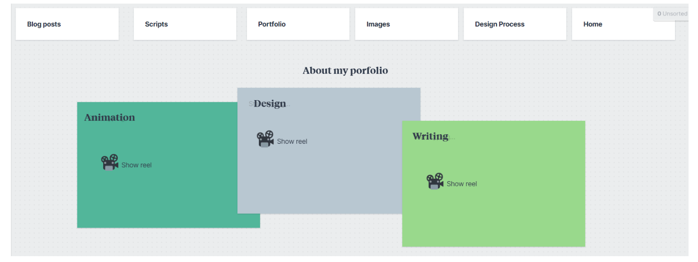
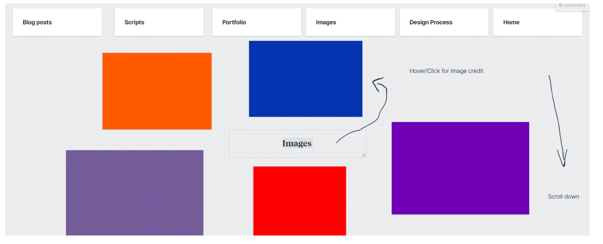
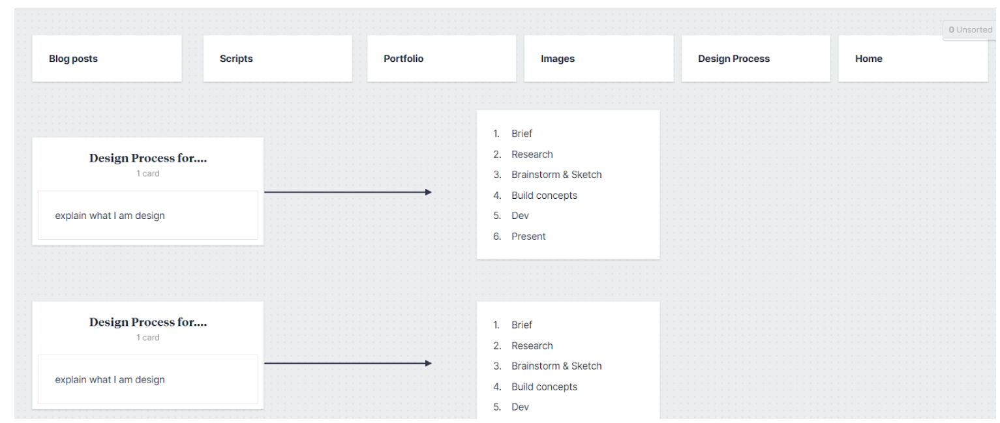

Blog Post 2
Topic: Reflect on Moulthrop, S. (2003) ‘You Say You Want a Revolution? Hypertext and the Laws of Media (1991)’.
This text resonates with the internet quite heavily. A lot of the claims in the text seem to be predictions for what the internet would and has become. For example, the text discusses hypertext and Ted Nelson's project Xanadu. Project Xanadu would be a repository and a central network for all writing (Moulthrop, 2003). This would make text accessible to anyone and everyone on Xanadu.
A lot of other creators seem to have been inspired by this. For example, Audible which allows most people on the internet to listen to books at a fee. Another example is Substack, which allows anyone on the internet to read free essays or subscribe to someone's page so you can read all their essays.
The text also lists various issues related to hypertext that are relevant to the internet today. The text expressed the political ramifications that are associated with hypertext that people are not necessarily concerned about (Moulthrop, 2003). This resonates with the internet today as people are not concerned with the political ramifications of the internet. For example, the idea that the internet can sway elections, and there haven't been measures put in place to prevent this.
Another interesting point I found in the text that resonates with the internet today is that the author mentions that after hypertext, people will be looking to the next innovation (Moulthrop, 2003). This is reminiscent of the internet today where people are always looking for the next big thing; this could be an app, a new development, or website.
There is only one part of the text that doesn't speak to the internet today, and that is the part where bookstores and libraries would be dead and everything that is text-related would become electronically stored (Moulthrop, 2003). In fact, the opposite has happened, and as recently as 2020, there was a resurgence of independent bookstores (Raffaelli, 2020). So this is the only part that doesn't necessarily speak to the internet today.
Folder structure and URL scheme.
I will have 5 five folders:
Homepage
This is the landing page. It will feature an about me section and explain who I am. I want it to be a video so it's more interactive. I will also have all my folders at the top to make them easily accessible. I was inspired by The Diigitals homepage because it's very clean, clear, and interactive.
Inspiration
Blog posts
I want the blog post page to be very enticing and interesting to look at because I want the reader to want to read my posts. I want to add images and make it quite colorful and interactive. I was inspired by Busybeehazell's blog section.
Inspiration
Scripts
I want to add an about section for the scripts to explain what the scripts are for and which language. I will also add tabs on the page for each coding language. I was inspired by Sanatan coding website because it's clean and easy to read.
Inspiration
Portfolio
In this section I want to make it very engaging so for each section of my portfolio, I would like to add an animation or gif to give a preview of my work before they open each tab. The user will need to hover over the tab to start the show reel. I will also write about the section so the user can read about my portfolio. I was inspired by Wendy Ju's website. It's very interesting and showcases her skills very well.
Inspiration Images
The images folder will be very simple. I will place all the images I have used on the page and the viewer can click on the image or even hover to view the credits. The images will also be credited. I was inspired by Sophie Westfall's website because all the images are easy to find and in one place. The user can also scroll down to see more images. https://www.sophiewestfall.com/
Inspiration Design Process
Once the user opens this tab. I want the user to be guided through my design process for each project, so when they open each tab they will see the different parts of my design process. I was inspired by various website that explain the design process like:
Inspiration What does www. Mean to me ?
When I think of www I think of the world wide web. To me this means that you can access anything in the world if you know how to access it. It acts as a tool to preserve human knowledge. WWW is a hypermedia because it operates outside of traditional media because it is a network of information connected by links (Rauscher & Reynolds, 2003).
This is the main limitation of www the user needs to know how to access it. I also think of this vast network of information that isn't policed or regulated. This means that anyone can access anything or put anything on the web with little to no restriction. This to me is what makes the www interactive because it cannot be completely controlled , it does not control , it is responsive and it does not require nontrivial effort (Mattioli, n.d.)